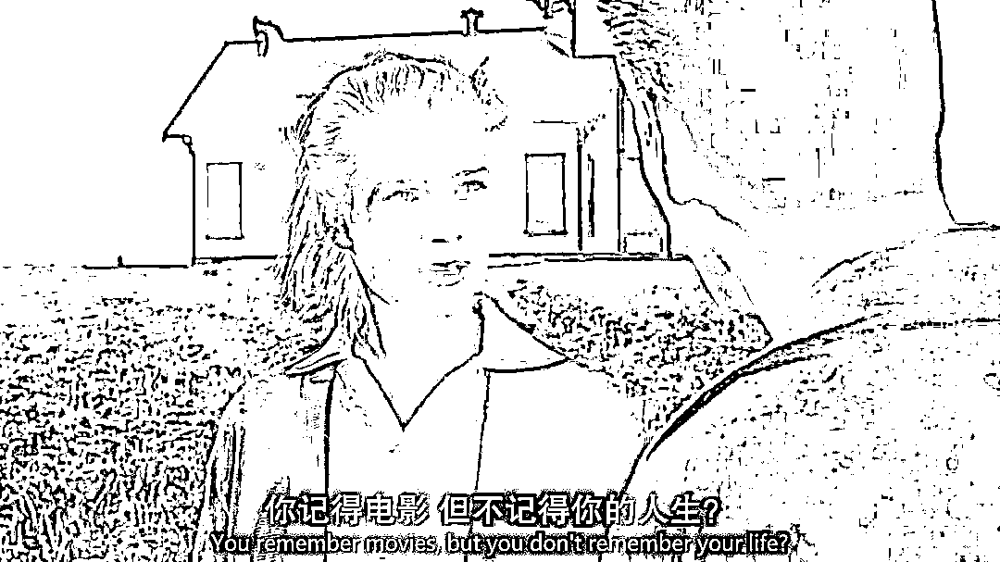

来源：https://ekk4hds9wo.feishu.cn/docx/Ubb8dQRY5o1u8ZxaSEkc6o5Nnze
大家好呀～本文是我总结的选自我从事创作的10条经验。不认识我的小伙伴可以简单看下👇
研究了很多所谓的“技法”以后，我发现对于每个人来说，不管是想在公域自媒体做好，做出自己影响力，还是想赚到更多钱，哪怕只是在朋友圈卖出货，其实真正的能力是回归到与人相处上面。
考验的是一种「与他人相处的能力」，是对人性的理解、对用户的理解、还有对世界运行规律的理解，全是一种与他人相处的底层逻辑。
一对一成交某个用户的时候，考验的是与一个人相处的能力。通过短视频在公域获取流量、通过朋友圈文字在私域获取成交，考验是一对多的相处能力，是一种与人群相处的能力，需要掌握大众心理学。
所以如何获得这种能力呢？
知己知彼百战百胜。
想获得他人注意力，想让他人喜欢，我们就要先非常懂对方，懂一些人性共同之处，真真正正让自己去体验和感受人与人的链接。就像如何做出当下有热度的视频一样：哪怕不在工作时间，我会刷各种类型内容，每次刷视频、看文章的时候，都会认真翻看评论，去看群众的声音，去看大家的关注度，所以我很多时候都能找到很好的选题，也能做出涨粉率很高的视频。
因为找选题虽然是最终目的，但是在找的时候人不能太过功利心，而是让自己真正去关心大家的处境、在意什么关心什么，真真正正的站在群众角度去想他想的事情。我有时候在看评论的时候，都会刻意给自己几分钟停留思考的时间，让自己尝试放在对方讲话的语境去设想那个处境，会有什么感受，这个时候你有了这种感知再做内容，也自然很容易做到大家心坎里。
一切所谓的流量、金钱，想要获得，技法只是最表层的，背后全是围绕“人”。不如多让自己去认真安静观察这个世界，从跟身边人相处开启。
“这是一项需要走很久的路，很考验悟性，更考验一个人底色是否是善良的，
因为“善良是高度共情的表现”
“你觉得流量是什么决定的？”
“选题代表着什么？”
这两个问题很基本，但其实很多人都答不上来，这就是一件很恐怖的事。想做内容的人都想获得流量，但是很多人却不知道什么决定的，那该如何谈获得呢？
给你举一个形象的比喻：
我卖的是很烂的花，但是我门店装修的特别好，10个9个都想进
你卖的实际很高级的花，但是你门店装修的，10个人9个都不想进。
请问？你的花再好，有人会去买吗？门进都没进去，会买吗？
门店就相当于你的选题，你的开头。
但是如果你只是门店装修好，里面东西太烂，别人是不是进去就想出来？
这个就是完播率，所以只有里面货也好，完播才会高
所以一条好的视频，或者说数据好的视频，是方方面面都做的好，而不是一方面。
很多人视频没爆，不是你做好了什么，而是你没做好什么，是短板效应，
所以这个时候，才需要技法。
很多逻辑各平台通用，不管是抖音/快手/b站/小红书，其实本质都是产出内容的平台，背后很多逻辑都是相通的，核心就是对用户的了解，了解应用场景、了解需求、懂内容。就像抖音的开头，其实就是播客的标题，就是小红书的封面+标题，就是B站的封面+标题，只不过不同平台形式略有变化，但是本质都不变。
“真正的心法
是可以一套方法可以打通各个平台
这些是道的层面
外在的术可以随时变
抓住不变的才会把控住确定性
只有确定性，才决定成功与否”
对于在某个领域有资深研究、非常有潜力成为IP的人，大部分人遇到最头痛的问题就是，找不到好的操盘手。很多人识别不到好的操盘手，也不清楚两者之间关系是什么。很多时候你会发现，一些人本身现实中非常有货，很有个人魅力，但是自己账号可能发了几百条视频都平平无奇的。但换了一个账号发布，数据爆火。就是因为有一个好的挖掘人，再加上懂流量从市场角度，挖掘出好的选题，如此一匹配：
「即使这个人，还是这个人
这个人讲的话，还是这个人讲的话
但是他就能出圈了」
我认为IP与操盘手的关系，就是伯乐与千里马的关系
如果用一匹马来比喻，便可以这样理解：
一匹好马，得先有人识别出好马特质
（能识别的能力，就是好的操盘手要做的）
再把它放在赛场上搏一搏
（也就是一个懂内容，懂流量逻辑的操盘手，能给这匹马一个展示的机会）
观众才有机会在赛场上看到这匹好马
（用户拿着入场券进入的赛场。也就是一个账号，通过内容维度，为你吸引来你的精准用户，你在发作品的时候，得以为你汇聚一批能识货的第一批受众）
最后这匹马才有机会出圈
（好的操盘手挖掘出的选题+人物挖掘+内容策划，全方位给了这匹马展示实力的机会）
也就是那句老话：“好的千里马得配好的伯乐”
反过来，即使你是一匹好马，没拿到比赛入场券，只在场外散步
再好，观众也是没有机会看不到你的。
所以如果你本就是一个好苗子好ip，去找到最有实力的伯乐，能为你拿到最好的入场券、选中最好的赛场、吸引来最好的一批观众，然后接下来，就是你显示实力的时候了。
——你可以彻底跑千里，展实力！
好莱坞电影剧本中有自己的节拍表，短视频同样如此。电影观众观看电影时，提前默认了影片的大概时长，并且腾出特有时间、去特定空间去观看电影。但短视频观众是随机的，上下滑动中随时在互相竞争，所以对短视频创作者的节奏要求更高，信息密度很重要，而且开头更重要。
但如何设计开头？一定也不是从文案角度出发，因为影像是多轨的，不是单轨的，就需要我们用「影像思维」去设计，才会增加短视频的赌注，一切你能看到的，都是无形中催眠观众。
所以拍摄，也不是相机拍的就比手机好。重要的不是器材，是如何取景。
比如景别，你要选择让观众看到什么？不看到什么？可能多一点，观感就变了，观众就想划走了。再比如情境，你完全可以把内容交给画面，通过情境改变观众的认知起点（这也是一种特别能够避免违规的方法）
你必须真正懂得你走的每一步背后的底层逻辑。思考这件事有多重要，准确的判断，能让你掌握底层逻辑的根本，而这个底层，是一个可以让你进行“复制+升级”的根。
当我给一些人做短视频指导时，常常会出现以下几种情况：
1.没懂，也没去做，听完跟没听一样。
2.当时就懂了，并且快速做出结果。
——这种情况极少，基本只有一种情况，就是这个人之前已经花过时间去大量学习和实践，跟我有了大量的共同认知，这个时候会真正懂这个逻辑，做成后也会非常懂得我给出建议的重要性。
3.没太懂或者以为自己懂了，但是乖乖去做。
——这是大部分，也是相对好的一种情况，大概率都会获得结果，但如果不懂真正的底层逻辑，一旦遇到瓶颈，就又不知所措。但即使有些人没真懂，但她获得的是什么？
是在大脑里，埋下一颗“种子”。
这件事有多重要？一个人能获得的成果，取决于他目前拥有的所有认知。所以常常人会说：赚钱来自信息差，成功来自信息差，你赚不到你认知以外的钱。仔细想想，你平时做一件事的灵感、那些看不见的“思考”来自哪里？其实就是来自那些你大脑已经获得的信息。你曾经听到过，所以它就像一颗颗种子播种在你的田地里，长出来的果实不可能来自一个不存在的种子。有时候我在朋友圈发的任意一句思考，就会有人来跟我私聊感谢，说受到了启发。因为也许那一句话，是我走了365天得来的经验。但可惜免费的低价的知识总会有不被重视的宿命，因为获得的太容易了，听的时候也不会有太多敬畏心。一句话如果价值10万，一个人可能会反复揣摩一年。
但还是想给大家分享，注意那些重复的成功因素，换句话说能让你自己一次次成功的那个点一旦被你挖掘，它大概能被你复制，甚至升级。重要的是，我们能否强迫大脑去抵抗人性的弱点，人性的局限性，思考的惰性，去关注到那些没被关注到的，承认一些成功就是因为他人的馈赠。
“对他人来说，是他的价值的被认可
对我们自己来说，可能又会进行一次升级。”
很多人做自媒体无从下手的时候
就想着“抄同行”
但往往这里最容易「掉进陷阱」
首先，你怎么确定对方就是你的同行呢？一件事最可怕之处就在于，当你没有掌握全信息以前，往往你看到的都是“假象”，很多人只看到表面，没看到深层次的东西，“判断”这一步就有可能出错了，你以为对方内容跟你一样，但可能人家走的完全是另个路线，吸引的人群也完全不是你的目标用户，如果你模仿，只会人群越来越歪。
短视频是“视听结合”的，观众获取信息不止是文字！不止是文字！
其次，你的同行可能自己都没走明白，你去借鉴？岂不更是越走越歪。很多人火是不知道自己怎么火的，我有个来找我咨询的朋友，拿着“同行”视频给我看，拍过60多万爆款，我一眼就看出来爆款元素是什么，但是这个博主自己没看明白，后面视频流量下滑均赞几百几千，自己都复制不了自己。
再次，即使数据好并不代表变现好，只有外行，才只会盯着数据看。我基本也是一眼就看出来，这个博主不懂变现，且非常不懂，对方亲自加了好友去详聊，又验证了我的判断，后面基本从内容、运营、变现，公私域都帮他梳理了一遍，也算避免走了弯路。对于创业者来说，时间是最为要紧的金钱，很多时候往往在错误的路上努力，只会越走越远，越来越歪，时间和金钱都会浪费。
所以最初的那个判断是最为重要的，而那所有判断的原点，其实来于对于信息的掌握，就是你要尽可能多的学习、了解到更多信息，你对一件事情判断才可能是准确的，注意，只是有可能准确喔。
所以真的再次跟大家强调分享这个观点，没有掌握全信息以前，你看到的可能都是假象。
一步错，步步错
多去问，多去学习
让自己信息源尽可能饱满
才会提高你做事的成功概率
做短视频一定要先有一个“项目思维”
你要告诉自己：有武器，不一定全用上
比如：我可以做内容高认知、拍摄制作复杂、制作周期长、很难被超越的作品。但我也可以做一些很简单的内容，比如我账号目前更新的大部分作品，拍摄制作很简单、文案也没有多复杂，前者一条视频制作时间够我拍后者的五六条。
为什么？因为我用3分能力就能拿到80分，我为什么要花10分能力去拿100分？这件事从项目角度去考虑，就应该是选择前者，尤其在账号早期。
所以我的布局就是：
用大部分时间快速用3分能力去多拿一些80分，偶尔用10分能力拿一些100分。
当然这个做法是有前提的，我能用3分拿80分，是我进行过市场考察，判断过我的能力在这个领域可以比较轻松的降维打击很多人，所以才会收一些力，去创作。但大部分人刚开始，如果找好定位可以沿用这个方法，没找好的时候，还是要多付出努力增加自己赌注的。
所以就又回到了我之前提过的话题，有些人的能力在视频中，只体现了冰山一角，有些人可能就已经是自己的100倍。不过当然我不会一直让自己处于舒适圈，高难度的我也肯定会继续尝试，也要继续积累创作经验嘛～
最后还想分享的是：
不要在乎数据差的，复盘反思就好了。大不了就隐藏呗，我也会这样做。你只要想着如何做出更好的视频，到时候展示给大家就好了。成功的人成功后，别人会嘲笑他曾经的失败吗？不会，反而那是给更多人用来借鉴的经验。
So，勇敢去做，亲爱的朋友们～
做内容嘛～要耐得住心性，不要在乎一时的得失，要有长远的思维。数据不好就不好呗，继续干呗，做更好的不就完事了？不要玻璃心，不要怕被嘲笑，要永远记得支持你的人～
所以你们看，做自媒体，怎么可能只是拼创作能力呢？是拼一个人全方位的综合能力。
做自媒体必须了解“全方面”
为什么呢？
起初我觉得“内容”更重要
于是我把市面上短视频课几乎都学了一遍，但后来发现，内容再好，很多人先死在了“推送”这一步，你觉得内容好，但算法不觉得，给你推送错误人群你怎么办？
于是我又去学习“算法、运营”
但我发现，这个确实可以锦上添花，但哪怕内容好，算法正确，数据也好，你变不了现怎么办？变现不高？或者你做的特费劲，投产比很低怎么办？
接着我又继续付费学习“商业思维”
学完公域、又去学习私域，这块虽然不算我强项，但至少也是叠加优势，可以很好的跟内容匹配起来，用创业者思维去给账号“做规划”
但即使前面理论都很扎实，实践起来还是会遇到问题怎么办？
所以我又选择这个领域top1级别的创作者，成为对方第一个也是目前唯一的内容编导，一边学习，一边实践，持续提升内容能力。
做自媒体要有内容思维也要有商业思维！因为粉丝≠变现！同时，赛道也决定流量/变现的天花板，比如我有给朋友规划出万粉做到“月变现6位数”的商业路径，并超额实现，但可能有些人的赛道可能就做不到。
另外，非常建议每个人多多全方位学习。即使我有本科4年➕毕业2年的导演经验，但我还会去踏实学习各方面知识，赚到的钱大部分都用来投资大脑了，所以现在我自己视频的内容，拍×出镜×写×剪×运营×商业等，全部自己一个人完成。
“我相信，一个人花费时间越多、掌握能力越多
你的壁垒也一定比其他人更高！”
即使我现在已经能够清楚把控住哪些视频一发出来就是爆款，以及能够稳定复制爆款。但下一步除了保证稳定的爆款外，一定要去花时间去做一些创新，去做一些测试。
因为那些创新和测试没成功前，也许溅不起水花，数据也一般，但是一旦测试成功，就会有百倍数千倍的成果获得，将是投产比最高的。
就像一些大的公司，比如谷歌会设立一个部门，投资很多费用去搞创新，搞科研。也许在前期投入投产比不成正比，但是一旦测试成功，就是投产比最高的，我们需要有勇敢测试的精神。
所以你看这是在做短视频，但是这是具体的关于创作的思维吗？不，这是背后做事儿的认知和态度，这些看不见的是无形的手，是最重要的。所以我有时候也会故意做一些测试，这些不会只关注表面的数据，因为数据能力已经掌握，剩下的是要继续创新，不断探索自己的边界。
我到后来突然醒悟，做自媒体的经历，激发了我开始理解，曾经学电影时最缺乏的能力，也懂了那句“电影创作者要先学会生活”。
我最早大学拍片子其实偏野路子，拼的其实是自己的一些小小灵感、天马行空的创意。后来大学时，在北京跟着《仙剑奇侠传》的编剧王老师，作为电影编剧身份，跟着团队一起创作，学习了一些科班编剧知识。再往后，大四去考上海戏剧学院导演研究生，从导演视角，体系化学习了一遍电影知识，也拿到了超高分，这个阶段算是补充了自己的导演知识。
但是现在回头看，这里有个问题…
之前学电影的时候，大部分时间花在观看影片、分析技巧，身边人基本也都是电影圈的，大家聊的话题基本还是围绕电影、创作。刷朋友圈，基本看到的也是身边朋友入围电影节，或者电影圈里的新闻。现在回头看，突然发现那个时候越关注电影，我的视野其实越窄。回头看那个时候我大学拍的作品，其实特别自嗨，作品也很难即时去见观众。虽然也入围了一些电影节拿了些奖，但我现在换个视角发现，电影节其实面向的也是经过筛选的观众，普通影院里的观众才是更大部分的声音，恰恰也就是自媒体平台的观众。
于是，转行到自媒体后，我的世界更丰富了。
一方面，让我圈子一下子打开了很多。因为这个技能可以给各行各业赋能，也让我认识了各个领域优秀的人，打开了更广的深知，不止提升了全方位的能力，也看到了更多样的生活。
一方面，自媒体创作非常轻盈，我可以很快速创作、即时去见观众。我会开始体谅他人，换位思考，去想观众到底需要什么？为什么想看这些？不想看哪些？我如何又做自己喜欢的，又让大众喜欢？
刷抖音，能让我看到众生相。能看到当下，我们这个时代，大家在关心什么。因为什么，会流泪、感动、愤怒…很多伟大的作品，都是能够引起大众共鸣的，这一定不是技巧有多牛，而是对人的体谅，对生活、人性有深刻的理解，再用技巧去传达，短视频也是如此，技巧只是一门沟通你跟观众交流的桥梁。
我现在更想做能够被大部分人看懂、认可，同时自己又喜欢，并且还能给社会带来意义的内容。最近也愈发开始关注那些，拍摄普通，人物普通，但是视频内容能够引发大量观众共鸣的视频。其实，在视频里能做到接地气、真诚、自然，在自媒体上，恰恰是最难的。
你想想，有多少人连对着镜头讲话都不敢，其实，单纯能在镜头表现的像生活中的自己，这一点，就特别不简单，我自己就练习了接近一年，才只是做到接近。除了一部分天赋型选手，大部分想做短视频的创作者，我觉得最高境界应该是：
去真正关心这个时代，去用心生活，去体验各种喜怒哀乐，深刻的记住那种感受。
最后，学完技巧后，放下技巧，真诚做自己。

以上是从我的朋友圈中经常发的思考里整理的一小部分
希望对大家有所启发，也欢迎一起讨论～
祝愿大家都能多拍爆款！多赚大钱！